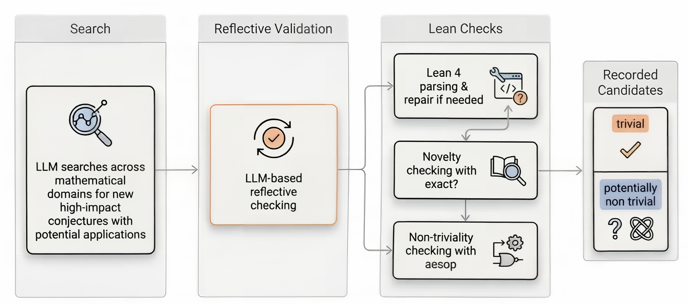

Candidate conjectures generated by an LLM are autoformalized as Lean 4/Mathlib statements, type-checked, and probed with exact? and aesop for novelty and nontriviality.
Abstract
Major mathematical conjectures still depend heavily on expert intuition, so a unified method for the systematic generation and validation of conjectures with substantial mathematical potential remains unavailable. We present a three stage pipeline for major conjecture discovery, with region search from explicit local evidence modules, reflective validation for foundationality, novelty, and potential significance, and formal validation in Lean 4 and Mathlib. The objective is the discovery of mathematical problems with high problem taste, namely problems whose proofs could reorganize the language of a research area and provide durable help to human mathematical research. Experiments on twenty candidates showstable passage from natural language to formal checks, with twenty out of twenty candidates passing Lean parsing and type checking, twenty out of twenty candidates not directly absorbed by exact?,twenty out of twenty candidates not automatically discharged by aesop, and no explicit duplicates or near duplicates.
Problem
Proposing major mathematical conjectures relies largely on expert intuition. No systematic method exists for generating and validating conjectures with substantial mathematical potential, or 'problem taste'.
Approach
A three-stage LLM pipeline is used. Region search proposes candidates from local evidence modules. Reflective validation scores each candidate for foundationality, novelty, and potential significance. Formal validation compresses each candidate into a Lean 4 theorem statement in a Mathlib environment, checks syntax and type correctness, uses exact? to test whether Mathlib already absorbs it, and uses aesop to test whether it is trivially discharged.

Figure 1: Overview of the three stage pipeline. The search stage proposes high potential candidates from mathematical regions with explicit local evidence modules. The reflective validation stage performs high level screening in terms of foundationality, novelty, and potential significance. The Lean stage performs parsing, novelty checks with exact?, and nontriviality checks with aesop. The output
Results
All twenty candidates passed Lean parsing and type checking, and none was closed by exact? or aesop. No duplicates were found, while semantic scores varied substantially across candidates. The authors stress that the conjectures' truth is not established.